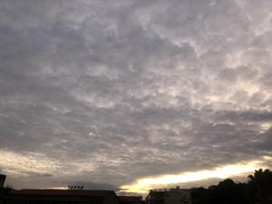
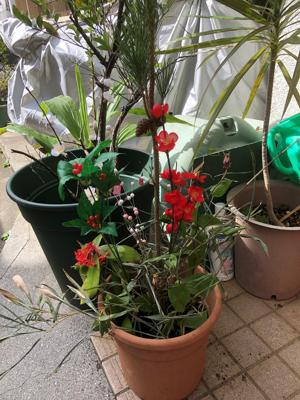
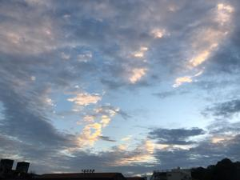

うるがいの話 ある日
最新: 令和５年の元旦【うるがいの話 ある日】とは 一日だけのプログです
『うるがいの話』の最新一日だけのプログで、通信料が少なく経済的だ。カニの画像をクリックすると全ての日付が載る『うるがいの話』サイトを表示します
|
|
【うるがいの話】 うるがい(ｳﾙｶﾞｲ urugai)とは、『もずくがに』の名前でとても大きくなります。 |
|---|---|
|
|
【カミマヤーの話】 猫のことを方言でマヤーといいます。カミマヤー（kamimayaa）とは、神の猫のことです。 |
|
【たながぁの音楽】 たながぁ（ﾀﾅｶﾞｰ tanagaa）とは手長えびのことで、何種類かあり大きいのは車 エビぐらいになります。 |

|
【ぶながぁの話】 ぶながぁ(ﾌﾞﾅｶﾞｰ bunagaa)とは、赤い髪の毛、赤い身体、そして身長は１ｍ２０ｃｍ ぐらい、川の蟹を食べているの目撃された。場所は沖縄県国頭郡大宜味村のと ある村僕の隣近所に住んでいる爺さんから、聞いた話です。 |
|
|
【ギーマの話】 ギーマ(giima)とは、山原の里山に咲くスズランに似た、 花を付けます。実は食べられます、 気が付くと口の周りが紫になっています。 |
2023年01月01日 (日）令和５年の元旦
16:49
 

朝日は拝めなかったが、一週間まえの雨の予報は外れる。門松は、毎度のこと
ながら生け花みたい。ヨメのお母さんが、お盆と勘違いしたのかオードブルを
買ってと聞かないので、２千円近くの物を買い届ける。ヨメが、お母さんのた
め小皿に分けたあと残りは家に持ってきた。多い！、おまけに何を考えたのか
ヨメは、沖縄の年中行事の本から、仏壇に供え物をうさぎた（お供えする）。
今年は、体重を落とすと目標を立てたが、これらの物は誰が食べるのだろう。
大晦日の昨日、食器洗いがピピーと音がする、何度か試すがやはり音がする。
昼過ぎ、電子レンジを使っていたヨメが、煙が出ている！と、みると電子レン
ジの淵が焦げている、アア～、修理だ。こうして、今年もいろいろな事が起き
たのである。

１６時４４分 ビットコインの総資産 ￥６、２８９（↓１０）